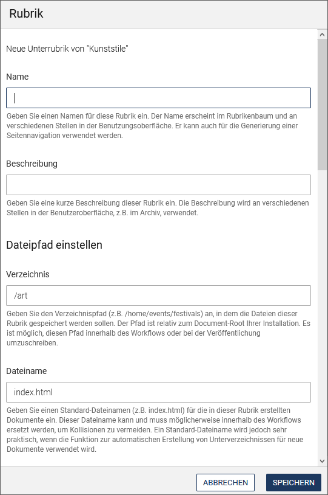
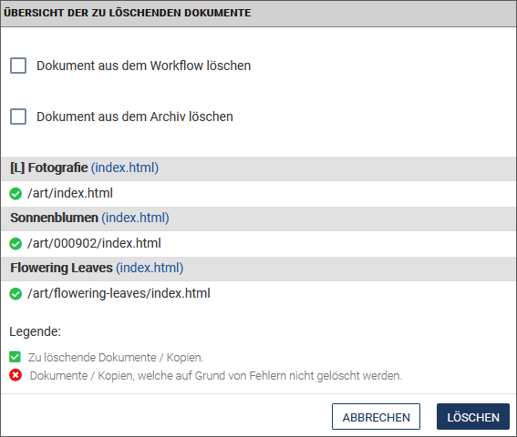

Dokumente verwalten
imperia bietet Ihnen mit dem Dokumenten-Browser eine übersichtliche Verwaltung aller Dokumente und Assets in einer Ordnerstruktur. Eine Ausnahme bilden gelöschte Dokumente, die im Archiv zu finden sind.
Aufbau und Funktionsweise des Dokumenten-Browsers#
Im Dokumenten-Browser stehen Ihnen die gewohnten Funktionalitäten zur Verfügung, die Sie zum redaktionellen Arbeiten benötigen. Sie können von hier aus Dokumente erstellen, veröffentlichen, reparsen oder löschen.
Optional können Sie weitere Spalten in der Übersichtstabelle einblenden, wenn Sie weitere Informationen zum Workflow-Status des Dokuments einsehen möchten.
- Öffnen Sie über Dokumente -> Dokumenten-Browser den Dokumenten-Browser.

Der Dokumenten-Browser weist im linken Bereich die Rubriken in Form eines hierarchischen Baums oder einer Verzeichnisliste auf. Im rechten Bereich finden Sie die Dokumentenliste der ausgewählten Rubrik in einer Tabelle, sowie einen Vorschaubereich, in dem zusätzliche Informationen zu dem Dokument angezeigt werden und Aktionen ausgeführt werden können:
Sowohl der Rubrikenbaum, als auch der Vorschaubereich können durch einen Klick auf das Pfeilsymbol der Trennlinie aus- und wieder eingeblendet werden.
Im oberen Bereich können Sie innerhalb der Suchfunktionen Einfache Suche und Erweiterte Suche ihre persönliche Suche konfigurieren und anschließend als Filter speichern, um auf einfachem Weg jederzeit die von Ihnen benötigten Dokumente und Assets zu finden.
Arbeiten mit dem Rubrikenbaum#
Rubriken bilden die inhaltliche Struktur Ihres Projekts, indem Sie Themen für die Dokumente vorgeben.

Sie können den Rubrikenbaum in verschiedenen Ansichten darstellen lassen:
- Aktivieren Sie oberhalb des Rubrikenbaums die Option Rubriken, wenn Sie die Rubriken in einer Baumstruktur angeordnet haben möchten, oder die Option Verzeichnisse, wenn sie in Form von Verzeichnissen als Liste erscheinen sollen.
- Aktivieren Sie die Checkbox Einschließlich Unterrubriken unter dem Rubrikenbaum, wenn Sie die Unterordner auch angezeigt bekommen möchten.
Mit Hilfe des Kontextmenüs einer Rubrik können Sie die Rubrikeigenschaften bearbeiten, in der Rubrik neue Dokumente anlegen oder neue Unterrubriken erstellen:

Neues Dokument erstellen#
Mit dieser Option gelangen Sie direkt in den für die ausgewählte Rubrik hinterlegten Workflow. Stellen Sie sicher, dass Sie sich in der richtigen Rubrik befinden.
- Gehen Sie vor wie unter Dokument erstellen beschrieben.
Rubrik anlegen#
Nutzen Sie diese Option, wenn Sie eine neue Unterrubrik zu der ausgewählten Rubrik erstellen möchten.
- Vergeben Sie einen Namen und eine Beschreibung für die neue Rubrik.
- Geben Sie unter Verzeichnis den Verzeichnispfad an, in dem die Dateien dieser Rubrik gespeichert werden sollen.
- Legen Sie unter Dateiname einen Standard-Dateinamen für die Dokumente fest, die in dieser Rubrik erstellt werden.

- Legen Sie fest, ob Sie Medien-Dateien für die Rubrik zulassen möchten, um diese anschließend in das Media-Asset-Management aufzunehmen.
- Mit dem Schalter Nur ein Dokument lassen Sie nur ein einziges Dokument in die Rubrik zu.
- Die Einstellung Nur Unterrubriken erlaubt bei Aktivierung nur Unterrubriken in der Rubrik, nicht aber Dokumente.

- Nehmen Sie Einstellungen für den Workflow vor. Wählen Sie den Workflow aus, den die Dokumente in dieser Rubrik durchlaufen sollen.
- Entscheiden Sie sich für eine Metadatei für den Schritt METAEDIT im gewählten Workflow.
- Wählen Sie unter Template für den EDIT-Schritt des Workflows eine Vorlage aus.

- Vergeben Sie Lese- und Schreibrechte für die Rubrik und die darin enthaltenen Dokumente. Klicken Sie in das Eingabefeld und wählen Sie aus der Dropdown-Liste der verfügbaren Gruppen die gewünschten Gruppen aus.
- Bestimmen Sie unter Dokumenten-Berechtigung bearbeiten, wer Dokumente in der Rubrik erstellen, bearbeiten und löschen darf. Klicken Sie in das Eingabefeld und wählen Sie aus der Dropdown-Liste der verfügbaren Gruppen die gewünschten Gruppen aus.

- Sichern Sie Ihre Einstellungen, indem Sie auf Speichern klicken.
Rubrik bearbeiten#
Die Eigenschaften der ausgewählten Rubrik können mit dieser Option bearbeitet werden. Neben Name, Beschreibung, Verzeichnispfad und Standard-Dateiname können Sie hier weitere Einstellungen vornehmen - vorausgesetzt, Sie haben die entsprechenden Rechte.
- Vergeben Sie Rubrikeigenschaften, wie unter Rubrik anlegen beschrieben.
- Vergeben Sie zusätzlich Metavariablen für die Rubrik, indem Sie auf den nachfolgenden Link Bearbeiten klicken. Tragen Sie in dem sich öffnenden Fenster die gewünschten Werte für die Variablen ein.
- Sichern Sie Ihre Einstellungen, indem Sie auf Speichern klicken.
Archiv#
Mit dieser Option gelangen Sie direkt in das Archiv der ausgewählten Rubrik und können von dort ein Dokument auswählen und eine Vorgängerversion importieren.
Rubrik löschen#
Nutzen Sie diese Option, um eine Rubrik zu löschen. Bestätigen Sie die Sicherheitsabfrage mit OK. Beachten Sie, dass Sie alle Archiveinträge und Dokumente auf dem Schreibtisch, die in dieser Rubrik liegen, zuvor gelöscht werden müssen.
Dokumente finden#
Um Dokumente oder Dateien zu finden, haben Sie die Wahl zwischen einer Standardsuche, die mit Hilfe von Filtern weiter eingeschränkt werden kann, und einer erweiterten Suche, mit der individuelle und komplexe Suchanfragen möglich sind.
Standardsuche#
Für eine schnelle Suchanfrage bietet der Dokumenten-Browser die einfache Freitextsuche an.
- Geben Sie in das Eingabefeld der Freitextsuche den gewünschten Suchbegriff ein und klicken Sie anschließend auf
 .
.

Die Standardsuche ermöglicht es Ihnen zusätzlich, über Dropdown-Felder eine Suchabfrage mit ausgewählten Filtern einzurichten und dadurch die Suche weiter einzuschränken.
- Klicken Sie auf die Option Filter setzen in der Suchleiste.
Eine zusätzliche Leiste für die Filtersuche wird eingeblendet.
- Geben Sie den gewünschten Suchbegriff in das Eingabefeld ein.
-
Öffnen Sie über die Liste der Suchfilter und wählen Sie per Checkbox die gewünschten Suchfelder aus, in denen nach dem Suchbegriff gesucht werden soll.
Die ausgewählten Filter werden anschließend als Dropdown-Felder angeboten, in denen Sie die Suche weiter einschränken können:

-
Um weitere Suchkriterien festzulegen, klicken Sie innerhalb eines Dropddown-Suchfelds je nach Typ des Filters die gewünschten Einträge an (Filter "Tagging" in der Abbildung oben) oder geben Sie einen Suchbegriff ein (Filter "Titel" in der Abbildung unten).

-
Wenden Sie das Suchkriterium anschließend mit Klick auf Aktivieren an.
-
Mit Leeren setzen Sie den Filter jeweils wieder zurück.
-
Nutzen Sie innerhalb des Dropdown-Feldes den Schnellfilter, um die Anzahl der gelisteten Einträge zu reduzieren. Tippen Sie in das Eingabefeld oben den gewünschten Begriff ein. Die Liste reagiert bereits während des Eintippens und blendet die nicht passenden Einträge aus:
-
Fügen Sie weitere Dropdown-Felder zur Suchanfrage hinzu, indem Sie auf klicken.
- Entfernen Sie ein Dropdown-Feld aus der Filterleiste, indem Sie auf x hinter dem jeweiligen Filter klicken.
Die Dokumententabelle zeigt nun die passenden Suchergebnisse an:
- Um die Filterleiste wieder auszublenden, führen Sie Clear Filter aus.

Erweiterte Suche#
Die erweiterte Suche ermöglicht es Ihnen, individuellere und komplexere Suchabfragen zu stellen.
- Um in die erweiterte Suche zu wechseln, klicken Sie zunächst auf Filter, um die Filterleiste einzublenden.
- Wählen Sie unter das Untermenü Erweiterte Suche.
- Mit und dem Untermenü Standard-Modus wechseln Sie zurück in die Standard-Filtersuche.

Hinweis
Ein Umschalten mit der Übernahme der Suchkriterien ist nur von der einfachen Suche in die erweiterte Suche möglich, da im umgekehrten Fall die erweiterte Suche oft zu komplex ist, um als einfache Suche abgebildet zu werden.
Mit der erweiterten Suche können Sie strukturierte Suchanfragen nach Dokumenten durchführen.
Bei der erweiterten Suche verwenden Sie für die Suchanfrage ein Feld, einen Operator und einen oder mehrere Werte:

Filter speichern#
-
Nachdem Sie die Suchanfrage fertiggestellt haben, können Sie über und das Untermenü Filter speichern Ihre Suchabfrage speichern, um sie zu einem anderen Zeitpunkt wiederzuverwenden.
-
Geben Sie Ihrem neuen Filter einen Namen und klicken Sie auf Speichern.

Gespeicherte Filter anwenden#
-
Wenden Sie bereits gespeicherte Filter an, indem Sie auf Filter und anschließend auf den Namen des gewünschten Filters klicken:
Gespeicherte Filter löschen#
-
Wenn Sie einen Filter nicht mehr brauchen, können Sie diesen löschen. Führen Sie hierzu Filter und dann Filter verwalten aus.
-
Klicken Sie in der Übersicht der gespeicherten Filter auf Löschen hinter dem gewünschten Filter.

Arbeiten mit Dokumenten#
Die Dokumente, die in einer Rubrik enthalten sind, werden in einer Tabelle aufgelistet. Informationen zu jedem Dokument und mögliche Aktionen sind jeweils in Spalten hinterlegt.
- Wenn Sie eine Spalte in der Tabelle hinzufügen möchten, nutzen Sie die Option Ansicht und aktivieren Sie anschließend die Checkbox vor der gewünschten Spalte, um diese einzublenden.
Auch die Handlungsoptionen in der Dropdown-Box der Spalte Aktionen für ein Dokument werden auf diese Weise aktiviert. Sollte also bei einer der folgenden Aktionen, die Aktion nicht sichtbar sein, müssen Sie zunächst über Ansicht den Eintrag einblenden, indem Sie die entsprechende Checkbox aktivieren.

- Ändern Sie optional die Anordnung einzelner Spalten innerhalb der Tabelle, indem Sie diese per Drag & Drop verschieben. Alternativ können Sie die Anordnung der Spalten und der in ihnen angebotenen Auswahlfelder unter Ansicht / Anpassen ändern. Nutzen Sie auch hier Drag & Drop, um die Spalten oder Felder an die gewünschte Position zu ziehen.
In Spalten angebotene Informationen:
-
Aktionen: In einer Drop-Down-Box werden die für das Dokument möglichen Handlungsoptionen angeboten.
-
Icon: Mit einem Klick auf das in der Spalte angezeigte Symbol öffnet sich das Dokument in einem Vorschaufenster.
-
Titel: Enthält den Namen des Dokuments.
-
Dateiname: Liest den Dateinamen des Dokuments aus. Wenn Sie den Pfad anklicken, öffnet sich das Dokument in der Vorschau.
-
Verzeichnis: Zeigt den Pfad im Asset Management an.
-
Rubrik: Ruft die Vorschau des Dokuments in einem separaten Fenster auf.
-
Vorschau: Calls the preview of the document in a separate window.
-
URI: Enthält den Pfad und Dateinamen des Dokuments.
-
Aktuell: Ein Symbol (grünes Häkchen oder rotes Ausrufungszeichen) zeigt in dieser Spalte an, ob das Dokument auf dem Zielsystem mit dem auf dem Entwicklungssystem übereinstimmt. Mit einem Klick auf das Symbol erhalten Sie Informationen zum Publikationsstatus:
Die erste Spalte enthält eine Liste aller Copy-Seiten des Dokuments. In den weiteren Spalten werden die verfügbaren Zielsysteme mit dem jeweiligen Status angezeigt:
- Aktuell: Die Dokumentenversionen auf dem Entwicklungssystem und auf dem Zielsystem stimmen überein.
- Veraltet: Die Dokumentenversion auf dem Zielsystem ist älter als die auf dem Entwicklungssystem.
- N/A: Es sind keine Informationen verfügbar.
- Manuell gelöscht: Das Dokument wurde manuell vom Zielsystem gelöscht.
- Bedingung nicht erfüllt: Dieser Status erscheint, wenn der Freischalttrigger für das entsprechende Zielsystem definiert ist, aber das Dokument (oder die Copy-Seite) nicht den Bedinungen entspricht und folglich nicht freigeschaltet wird.
- Fehlt auf Develop: Das Dokument wurde auf dem Entwicklungssystem gelöscht, ist jedoch noch auf dem Zielsystem vorhanden.
-
Zuletzt beendet: Zeitpunkt zu dem der Dokumenten-Workflow zuletzt beendet wurde.
-
Veröffentlichungsdatum: Das aktuelle Veröffentlichungsdatum.
-
Ablaufdatum: Zeitpunkt, zu dem die Gültigkeit des Dokuments erlischt.
-
Wiedervorlagedatum: Zeitpunkt, zu dem das Dokument erneut vorgelegt werden soll.
-
Erzeugt von: Ersteller des Dokuments.
-
Letzter Editor: Letzter Bearbeiter des Dokuments.
-
Live-URI: Diese Spalte enthält den Dokumentenpfad. Wenn Sie diesen anklicken, öffnet sich das Dokument im Vorschaumodus.
-
Erstellungsdatum: Zeitpunkt zu dem das Dokument erstellt wurde.
Für jedes Dokument können Sie in der gleichnamigen Spalte bestimmte Aktionen durchführen.
- Wählen Sie in der Drop-Down-Box in der Spalte Aktionen die gewünschte Option aus.
Hinweis
Fehlt eine der im Folgenden beschriebenen Aktionen, aktivieren Sie im Menü Ansicht die Checkbox vor dem Aktionsnamen.
Informationen zu Dokument ansehen#
Über die Aktion Info in der Drop-Down-Box der gleichnamigen Spalte erreichen Sie in einem eigenen Dialog auf einen Blick alle Informationen zu dem gewählten Dokument, die in den anderen Spalten enthalten sind.
- Öffnen Sie in der Zeile des Dokuments in der Spalte Aktionen die Drop-Down-Liste mit den Handlungsoptionen für das Dokument. Führen Sie die Option Info aus.

- Klicken Sie auf x, um den Dialog wieder zu schließen.
Dokument in der Vorschau ansehen#
- Öffnen Sie in der Zeile des Dokuments in der Spalte Aktionen die Drop-Down-Liste mit den Handlungsoptionen für das Dokument. Führen Sie die Option Vorschau aus.
Zu dem gewählten Dokument wird in einem eigenen Fenster die Ausgabeansicht des Dokuments angezeigt.
Dokument reimportieren#
Reimportierte Dokumente werden vom Zielsystem an den ersten Schritt des Original-Workflows gesetzt. Falls der Workflow in der Zwischenzeit verändert wurde, durchlaufen reimportierte Dokumente den neuen Workflow.
Hinweis
Falls das importierte Dokument sich im Workflow befindet (und somit auch auf dem Schreibtisch liegt), ist diese Reimport-Option nicht möglich. Beim Versuch das Dokument zu reimportieren, erhalten Sie die Fehlermeldung "Im Workflow".
- Öffnen Sie in der Zeile des Dokuments in der Spalte Aktionen die Drop-Down-Liste mit den Handlungsoptionen für das Dokument.
- Führen Sie die Option Reimportieren aus.
Der Reimport wird durchgeführt. Sie gelangen zum ersten Workflow-Schritt des Dokuments, z.B. Meta-Edit.
Dokument löschen#
Sie können ein oder mehrere Dokumente vom Entwicklungssystem löschen.
Hinweis
Zum Löschen eines Dokuments benötigen Sie sowohl die Schreib- als auch die Löschrechte für die entsprechende Kategorie.
-
Öffnen Sie in der Zeile des Dokuments in der Spalte Aktionen die Drop-Down-Liste mit den Handlungsoptionen für das Dokument. Führen Sie die Option Löschen aus.
-
Um mehrere Dokumente zu löschen, aktivieren Sie die Checkboxen vor den Dokumenten, um diese auszuwählen, und wählen Sie Löschen in der Funktionsleiste unter der Tabelle.
-
Wählen Sie, ob Sie die Dokumente aus dem Workflow oder aus dem Archiv löschen möchten.
-
Bestätigen Sie die Auswahl mit Löschen.

Wurde das Dokument erfolgreich gelöscht, erscheint ein Statusreport mit grünem Balken. Wurde das Dokument nicht gelöscht, erscheint ein roter Balken. Zu beiden Status erhalten Sie weitere Informationen.
Template-Reparser starten#
- Öffnen Sie in der Zeile des Dokuments in der Spalte Aktionen die Drop-Down-Liste mit den Handlungsoptionen für das Dokument. Führen Sie die Option Reparsen aus.
Der Statusbericht des Template-Reparsers wird geöffnet.
Dokumenteigenschaften ändern#
Dokumenteigenschaften ändern Sie über die Metafelder, die sich in den Details des jeweiligen Dokuments befinden.
Hinweis
Der imperia-Administrator kann Metafelder zum Editieren freigeben oder sperren.
- Öffnen Sie in der Zeile des Dokuments in der Spalte Aktionen die Drop-Down-Liste mit den Handlungsoptionen für das Dokument. Führen Sie die Option Metaviewer aus.
Im Dialogfenster Details sehen Sie die Metainformationen des Dokuments:

- Tragen Sie die gewünschten Werte in den Eingabefeldern ein oder ändern Sie bestehende Werte.
- Fügen Sie ein weiteres Feld innerhalb des Metafelds hinzu, indem Sie auf Wert anhängen in der Dropdown-Box hinter einem Wert klicken.
- Löschen Sie gegebenenfalls ein Metafeld, indem Sie in der Dropdown-Box die Option Metafeld löschen ausführen.
- Verschieben Sie die Werte innerhalb eines Metafelds, indem Sie in der Dropdown-Box die Optionen Nach oben, Nach untern oder Ans Ende wählen.
-
Legen Sie ein neues Metafeld für das Dokument an, indem Sie auf Neues Metafeld oben klicken. Geben Sie in dem sich öffnenden Dialog im Eingabefeld Metafeld den Namen und dann einen Wert ein. Klicken Sie anschließend auf Erzeugen, um das Metafeld hinzuzufügen.

-
Sichern Sie Ihre Angaben, indem Sie auf Speichern klicken.
Referenzen anzeigen#
Sie können sich ansehen, ob das aktuelle Dokument in einem anderen Dokument referenziert wird.
-
Öffnen Sie in der Zeile des Dokuments in der Spalte Aktionen die Drop-Down-Liste mit den Handlungsoptionen für das Dokument. Führen Sie die Option Referenzen aus.
Hinweis
Beachten Sie, dass es sich bei diesen Referenzen nur um Referenzen in anderen Dokumenten handelt und nicht um Assets, auf die das aktuelle Dokument referenziert. Referenzierte Assets im Dokument können Sie in der Spalte Info im Punkt Referenzen einsehen.
Änderungen anzeigen#
Wählen Sie diese Option, um die Unterschiede zwischen der aktuellen Version des Dokuments und der zuletzt beendeten Version anzuzeigen. Die Funktion Änderungen verfolgen ist Teil der Vorschau.
Dokument (erneut) veröffentlichen#
Mit dieser Aktion können Sie Dokumente und Assets veröffentlichen. Für Assets ist diese Option besonders relevant: Hierüber können Assets unabhängig von Dokumenten veröffentlicht werden.
- Wählen Sie die gewünschten Dokumente aus, indem Sie die Checkboxen davor aktivieren.
- Führen Sie die Option Veröffentlichen unter der Dokumententabelle aus.

- Bestätigen Sie die erscheinende Sicherheitsabfrage mit Veröffentlichen.
Diese Funktion kann auch im MAM genutzt werden.
Dokument auf dem Live-System löschen#
Nutzen Sie diese Option, um ein Dokument von allen Live-Systemen zu entfernen. Das Dokument ist anschließend weiterhin im Dokumenten-Browser vorhanden. Wählen Sie diese Option also, wenn Sie ein Dokument nur temporär entfernen möchten.
- Führen Sie für ein einzelnes Dokument die Option Live-Löschen in der Dropdown-Box der Spalte Aktionen aus.
- Wenn Sie mehrere Dokumente auf dem Live-System löschen möchten, wählen Sie die gewünschten Dokumente aus, indem Sie die Checkboxen davor aktivieren.
- Führen Sie die Option Live-Löschen unter der Dokumententabelle aus.

- Bestätigen Sie die erscheinende Sicherheitsabfrage mit Live-Löschen.
Wenn Sie ein Dokument auch vom Dev-System löschen möchten, nutzen Sie die Option Dokumente löschen. In diesem Fall ist das Dokument nur noch im Archiv vorhanden.
Historie eines Dokuments ansehen#
Alle Stationen des Dokuments, die dieses durchlaufen hat, sowie die Aktionen, die mit dem Dokument ausgeführt wurden, werden in der so genannten "History" des Dokuments festgehalten. Jeder Benutzer, der das Dokument bearbeitet, kann Einträge in der History anlegen oder bestehende Einträge bearbeiten, um anderen Benutzern Hinweise zu geben oder Kommentare zu hinterlassen.
- Öffnen Sie in der Zeile des Dokuments in der Spalte Aktionen die Drop-Down-Liste mit den Handlungsoptionen für das Dokument. Führen Sie die Option History aus.
Die History des Dokuments wird in einem eigenen Dialog schreibgeschützt angezeigt.